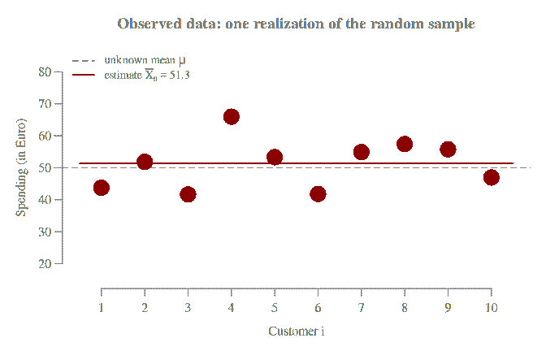
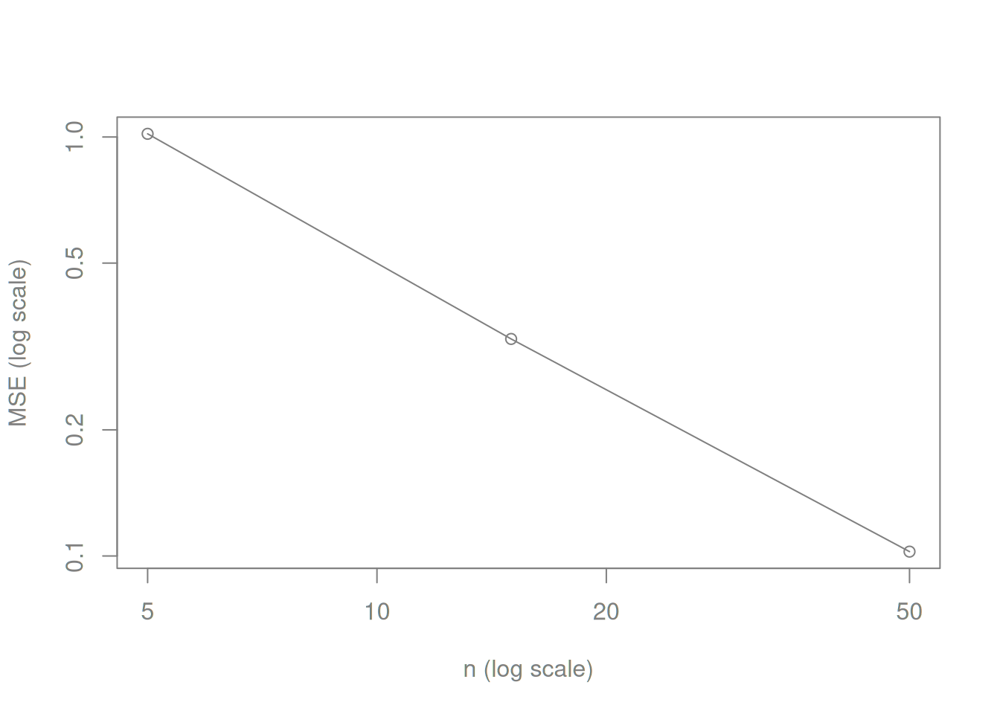

3 Estimation Theory and Monte Carlo Simulations
Learning outcomes of this chapter:
- You know the basic concepts of estimation theory and you can apply them to specific estimators.
- You know how to use a Monte Carlo simulation to check the accuracy (bias, variance, and standard error) of a given estimator
3.1 Estimator vs. Estimate
Let’s assume that we have an iid random sample \(\{X_1,\dots,X_n\}\) with \[ X_i\overset{iid}{\sim} F_X \] for all \(i=1,\dots,n\), and let \[ \theta\in\mathbb{R} \] denote some parameter (e.g. the mean or the variance) of the distribution \(F_X\).
An estimator \(\hat\theta_n\) of \(\theta\) is a function of the random sample \(X_1,\dots,X_n\), \[ \hat\theta_n:=\hat\theta(X_1,\dots,X_n). \]
Since \(\hat\theta_n\) is a function of the random variables \(X_1,\dots,X_n\), the estimator \(\hat\theta_n\) is itself a random variable.
The observed data \[ X_{1,obs},\dots,X_{n,obs} \] is assumed to be a certain realization of the random sample \[ X_1,\dots,X_n. \] The corresponding realization of the estimator is called an estimate of \(\theta\) \[ \hat\theta_{n,obs}=\hat\theta(X_{1,obs},\dots,X_{n,obs}). \]
Example: Estimators of the Mean and the Variance
The sample mean as an estimator of the population mean \(E(X_i) =\theta:\) \[ \hat\theta_n=\bar{X}_n=\frac{1}{n}\sum_{i=1}^nX_i \] For given data, we observe the realization \[ \hat\theta_{n,obs}=\bar{X}_{n,obs}=\frac{1}{n}\sum_{i=1}^nX_{i,obs} \]
The UnBiased variance estimator of the population variance \(Var(X_i) =\theta\colon\) \[ \hat\theta_n=s_{UB}^2=\frac{1}{n-1}\sum_{i=1}^n\left(X_i - \bar{X}_n\right)^2 \] For given data, we observe the realization \[ \hat\theta_{n,obs}=s_{UB,obs}^2=\frac{1}{n-1}\sum_{i=1}^n\left(X_{i,obs} - \bar{X}_{n,obs}\right)^2 \]
The Maximum Likelihood estimator of the population variance \(Var(X_i) =\theta\colon\) \[ \hat\theta_n=s_{ML}^2=\frac{1}{n}\sum_{i=1}^n\left(X_i - \bar{X}_n\right)^2 \] For given data, we observe the realization \[ \hat\theta_{n,obs}=s_{ML,obs}^2=\frac{1}{n}\sum_{i=1}^n\left(X_{i,obs} - \bar{X}_{n,obs}\right)^2 \]
Example: Estimating the Mean Spending of a Shop’s Customers
Recall the shop example from the chapter on probability: a shop randomly selects \(n=10\) customers and records how much each of them spends (in Euro). The observed data
\[\begin{align*} &\{X_{1,obs}, \ldots, X_{10,obs}\}\\[2ex] &=\{43.7,\ 51.8,\ 41.6,\ 66.0,\ 53.3,\ 41.8,\ 54.9,\ 57.4,\ 55.8,\ 46.9\} \end{align*}\] are assumed to be a realization of an i.i.d. random sample \(\{X_1,\dots,X_{10}\}\) with \(X_i\sim F_X\). The shop wants to learn the mean spending \[ \theta=\mu=E(X_i) \] of its customers.
The estimator \[ \hat\theta_n=\bar{X}_n=\frac{1}{n}\sum_{i=1}^n X_i \] is a function of the random variables \(X_1,\dots,X_n\) and is, therefore, itself a random variable. It describes all the values of the average that we could have observed.
The estimate \[ \hat\theta_{n,obs}=\bar{X}_{n,obs}=\frac{1}{n}\sum_{i=1}^n X_{i,obs} \] is the value of the estimator computed from the observed data \(\{X_{1,obs}, \ldots, X_{n,obs}\}\). It is a fixed number; in the shop example, \[ \bar{X}_{n,obs}=51.3. \]
The following animation shows the observed data (first frame) together with further possible realizations of the same random sample.
The dashed line shows the true (usually unknown) mean \(\mu=E(X_i)=50\).
The solid line shows the realization of the estimator \(\bar{X}_n\) computed from the respective realization of the random sample.
Each frame of the animation shows one realization of the estimator \(\bar{X}_n\). That is, the estimate \(\bar{X}_{n,obs}\) (first frame) is just one possible realization of the random estimator \(\bar{X}_n\). The realizations of \(\bar{X}_n\) jump around from realization to realization, but they always stay close to the unknown mean \(\mu\). How to assess this quality of an estimator is the topic of the next section.
Note: Notation for Estimators and Estimates
Often we do not use a distinguishing notation, but denote both the estimator \(\hat\theta_{n}\) and its realization \(\hat\theta_{n,obs}\) as \(\hat\theta_{n}\). This ambiguity is often convenient since both points of views can make sense in a given context. Sometimes, also the subscript \(n\) in \(\hat\theta_{n}\) is dropped and one simply writes \(\hat\theta.\)
3.2 Assessing the Quality of Estimators
Any reasonable estimator \(\hat\theta_n\) should be able to approximate the (usually unknown) parameter value \(\theta\), \[ \left(\text{random quantity}\right)\quad\hat\theta_n\approx\theta\quad\left(\text{deterministic parameter}\right), \] and the approximation should get better as the sample size increases, i.e. as \(n\to\infty\).
Statisticians/econometricians use different metrics to assess the quality of an estimator \(\hat\theta_n\). The most prominent metrics are:
- bias of an estimator \(\hat{\theta}_n\)
- variance and standard error of an estimator \(\hat{\theta}_n\)
- mean squared error (mse) of an estimator \(\hat{\theta}_n\)
3.2.1 Bias
If an estimator \(\hat\theta_n\) has no bias, i.e. if \[ \operatorname{Bias}\left(\hat\theta_n\right)=E\left(\hat\theta_n\right) - \theta=0 \] for all \(\theta\in\mathbb{R}\) and all sample sizes \(n,\) we call it an unbiased estimator.
Many modern estimators are not unbiased. However, every estimator should be at least asymptotically unbiased, i.e. \[ \lim_{n\to\infty}\operatorname{Bias}\left(\hat\theta_n\right)=0 \] for all \(\theta\in\mathbb{R}.\)
We would like to have estimators \(\hat\theta_n\) with a small (or zero) bias.
If the bias of an estimator \(\hat\theta_n\) is small (or zero), we know that the distribution of the estimator \(\hat\theta_n\) is roughly (or exactly) centered around the true (usually unknown) parameter \(\theta.\)
Example: Bias of the Sample Mean \(\bar{X}_n\)
Let \(X_1,\dots,X_n\) be an i.i.d. random sample with mean \(E(X_i)=\mu\) and variance \(Var(X_i)=\sigma^2\).
Sample mean \(\bar{X}_n\): Because the expected value of a sum is the sum of the expected values, \[\begin{align*} E\left(\bar{X}_n\right) &=E\left(\frac{1}{n}\sum_{i=1}^nX_i\right)\\[2ex] &=\frac{1}{n}\sum_{i=1}^nE(X_i)\\[2ex] &=\frac{1}{n}\,n\,\mu=\mu. \end{align*}\]
- Thus, \(\operatorname{Bias}(\bar{X}_n)=\mu-\mu=0\). The sample mean is unbiased.
3.2.2 Variance and Standard Error
However, also unbiased estimators \(\hat{\theta}_n\) may still vary a lot around the parameter \(\theta\) to be estimated. Therefore, is is also important to assess the variance (or the standard deviation) of the estimator.
We would like to have estimators with a small as possible variance/standard error.
The variance (and thus also standard error) should decline as the sample size increases, such that \[ \lim_{n\to\infty}Var\left(\hat\theta_n\right)=0. \]
Example: Variance of the Sample Mean \(\bar{X}_n\)
Let \(X_1,\dots,X_n\) be an i.i.d. random sample with mean \(E(X_i)=\mu\) and variance \(Var(X_i)=\sigma^2\).
Sample mean \(\bar{X}_n\): Because the \(X_i\) are independent, the variance of their sum is the sum of their variances. Thus, \[\begin{align*} Var\left(\bar{X}_n\right) &=Var\left(\frac{1}{n}\sum_{i=1}^nX_i\right)\\[2ex] &=\frac{1}{n^2}\sum_{i=1}^nVar(X_i)\\[2ex] &=\frac{1}{n^2}\,n\,\sigma^2=\frac{\sigma^2}{n}. \end{align*}\]
- The variance \(Var\left(\bar{X}_n\right)\) goes to zero as \(n\to\infty.\)
- The standard error is \(\operatorname{SE}(\bar{X}_n)=\sigma/\sqrt{n}\) and also goes to zero as \(n\to\infty.\)
3.2.3 Mean Squared Error (MSE)
To combine bias and variance into one metric, one typically uses the Mean Squared Error (MSE) of an estimator \(\hat\theta_n.\)
We would like to have estimators with a small as possible mean squared error, and the mean squared error should decline as the sample size increases, such that \[ \lim_{n\to\infty}\operatorname{MSE}\left(\hat\theta_n\right)=0. \]
The following holds true:
- The mean squared error equals the sum of the squared bias and the variance:
\[ \operatorname{MSE}\left(\hat\theta_n\right) = \left(\operatorname{Bias}\left(\hat\theta_n\right)\right)^2 + Var\left(\hat\theta_n\right) \]
- For unbiased estimators (i.e. \(E(\hat\theta_n)=\theta\)) the mean squared error equals the variance, i.e.
\[ \underbrace{E\left[\left(\hat\theta_n - \theta\right)^2\right]}_{\operatorname{MSE}\left(\hat\theta_n\right)} = \underbrace{E\left[\left(\hat\theta_n - E\left(\hat\theta_n\right)\right)^2\right]}_{ Var\left(\hat\theta_n\right)} \]
Example: MSE of the Sample Mean \(\bar{X}_n\)
We use \(\operatorname{MSE}=(\operatorname{Bias})^2+Var\) and the results from the two examples above.
Sample mean \(\bar{X}_n\): The bias is zero, so the MSE equals the variance, \[\begin{align*} \operatorname{MSE}\left(\bar{X}_n\right) &=\left(\operatorname{Bias}\left(\bar{X}_n\right)\right)^2+Var\left(\bar{X}_n\right)\\[2ex] &=0^2+\frac{\sigma^2}{n}\\[2ex] &=\frac{\sigma^2}{n}. \end{align*}\]
- The MSE \(\operatorname{MSE}\left(\bar{X}_n\right)\) goes to zero as \(n\to\infty.\)
- Since \(\bar{X}_n\) is unbiased, its MSE equals its variance.
3.3 Approximating Bias, Variance, and MSE using MC Simulations
Any of the the above assessment metrics requires us to compute means, i.e. \(E(\cdot)\), of random variables:
For the \(\operatorname{Bias}\left(\hat\theta_n\right)\) we need to compute \(E\left(\hat\theta_n\right)-\theta\)
For the \(Var\left(\hat\theta_n\right)\) we need to compute \(E\left[\left(\hat\theta_n - E(\hat\theta_n)\right)^2\right]\).
For the \(\operatorname{MSE}\left(\hat\theta_n\right)\) we need to compute \(E\left[\left(\hat\theta_n - \theta\right)^2\right]\).
We can use a Monte Carlo (MC) simulation to approximate these means by sample means using the law of large numbers which states that a sample mean over iid random variables is able to approximate the population mean of these random variables as the number of random variables to average over gets large (see Theorem 7.1 in Chapter 7).
The core part of a MC-simulation generates a large number of \(B\) (e.g. \(B=10,000\)) many realizations of \(\hat{\theta}_n\) for
- a given sample size \(n\) and
- a given data distribution \(F_X.\)
We can use the above core part of the MC-Simulation algorithm to generate \(B\) many realizations of the estimator \(\hat{\theta}_n\) \[ \hat{\theta}_{n,1,obs},\dots,\hat{\theta}_{n,B,obs} \] which allow us to compute the following MC-approximations based on sample means over the generated \(B\) realizations of \(\hat\theta_n\):
- The bias of \(\operatorname{Bias}\left(\hat\theta_n\right)=E\left(\hat\theta_n\right)-\theta\) can be approximated by
\[ \widehat{\operatorname{Bias}}_{MC}\left(\hat\theta_n\right) = \left(\frac{1}{B}\sum_{b=1}^B \hat\theta_{n,b,obs}\right) - \theta \]
The variance \(Var\left(\hat\theta_n\right)=E\left[\left(\hat\theta_n - E(\hat\theta_n)\right)^2\right]\) can be approximated by \[ \widehat{Var}_{MC}\left(\hat\theta_n\right) = \frac{1}{B}\sum_{b=1}^B \left(\hat\theta_{n,b,obs} - \left(\frac{1}{B}\sum_{b=1}^B \hat\theta_{n,b,obs}\right)\right)^2 \]
The mean squared error \(\operatorname{MSE}\left(\hat\theta_n\right)=E\left[\left(\hat\theta_n - \theta\right)^2\right]\) can be approximated by \[ \widehat{\operatorname{MSE}}_{MC}\left(\hat\theta_n\right) = \frac{1}{B}\sum_{b=1}^B \left(\hat\theta_{n,b,obs} - \theta\right)^2 \]
Note
By the law of large numbers (see Theorem 7.1 in Chapter 7) these approximations get arbitrarily precise as \(B \to \infty,\) i.e. \[ \begin{align*} \widehat{\operatorname{Bias}}_{MC}\left(\hat\theta_n\right)&\to_p \operatorname{Bias}\left(\hat\theta_n\right)\quad\text{as}\quad B\to\infty\\[2ex] \widehat{Var}_{MC}\left(\hat\theta_n\right)&\to_p Var\left(\hat\theta_n\right)\quad\text{as}\quad B\to\infty\\[2ex] \widehat{\operatorname{MSE}}_{MC}\left(\hat\theta_n\right)&\to_p \operatorname{MSE}\left(\hat\theta_n\right)\quad\text{as}\quad B\to\infty \end{align*} \]
So for large \(B\) (e.g. \(B=10,000\)) we can consider \[ \widehat{\operatorname{Bias}}_{MC}(\hat\theta_n), \widehat{Var}_{MC}(\hat\theta_n),\text{ and }\;\; \widehat{\operatorname{MSE}}_{MC}(\hat\theta_n) \] as roughly equal to \[ \operatorname{Bias}(\hat\theta_n), Var(\hat\theta_n),\text{ and } \operatorname{MSE}(\hat\theta_n). \]
3.4 Example: Sample Mean
In this example, we use a Monte Carlo simulation to check how well the sample mean estimates the population mean. To set up the simulation, we need to answer three questions:
- What do we want to estimate? (parameter of interest)
- How do we estimate it? (estimator)
- Under which conditions do we study the estimator? (scenario)
1. Parameter of Interest
We want to estimate the population mean \[ (\theta=)\mu=E(X_i). \] In real data applications, the value of \(\mu\) is unknown.
2. Estimator
We estimate \(\mu\) using the sample mean \[ (\hat\theta_n)=\bar{X}_n=\frac{1}{n}\sum_{i=1}^nX_i. \] We want to find out the bias, the variance, and the MSE of \(\bar{X}_n\).
3. Scenario
In a simulation, we choose the data distribution \(F_X\). This has two big advantages:
- We know the true parameter value \(\mu\). Thus, we can check how close the estimates are to it.
- We can study the estimator under different scenarios, i.e., under different distributions \(F_X\).
We consider the following scenario:
-
Random sample: \(X_1,\dots,X_n\) are i.i.d. with \(X_i\sim\mathcal{N}(\mu,\sigma^2)\) for all \(i=1,\dots,n\).
(In real data applications, the distribution \(F_X\) is unknown.) -
True mean: \(\mu=10\)
(In real data applications, unknown.) -
True variance: \(\sigma^2=5\)
(In real data applications, unknown.) -
Sample sizes: \(n\in\{5,15,50\}\)
(In real data applications, known: \(n\) is the number of observations in the dataset.)
For each sample size \(n\), we generate \(B=10000\) realizations of \(\bar{X}_n\) using the MC-simulation algorithm above.
4. Monte Carlo Simulation
The code follows the MC-simulation algorithm above: for each sample size \(n\), we repeat Step 1 (draw a random sample) and Step 2 (compute the sample mean) \(B\) times. Then, we use the \(B\) realizations of \(\bar{X}_n\) to compute the MC approximations of the bias, the variance, and the MSE.
set.seed(3) # makes the results reproducible
## Scenario (in real data applications unknown)
mu <- 10 # true mean (= parameter of interest)
sigma2 <- 5 # true variance
## Sample sizes and number of MC repetitions
n_seq <- c(5, 15, 50)
B <- 10000
## Empty vectors to store the results (one entry per sample size)
MC_Bias <- numeric(length(n_seq))
MC_Var <- numeric(length(n_seq))
MC_MSE <- numeric(length(n_seq))
for (k in 1:length(n_seq)) {
n <- n_seq[k]
## Generate B realizations of the sample mean
estimates <- numeric(B)
for (b in 1:B) {
X_sample <- rnorm(n, mean = mu, sd = sqrt(sigma2)) # Step 1
estimates[b] <- mean(X_sample) # Step 2
}
## MC approximations
MC_Bias[k] <- mean(estimates) - mu
MC_Var[k] <- mean((estimates - mean(estimates))^2)
MC_MSE[k] <- mean((estimates - mu)^2)
}import numpy as np
rng = np.random.default_rng(3) # makes the results reproducible
## Scenario (in real data applications unknown)
mu = 10 # true mean (= parameter of interest)
sigma2 = 5 # true variance
## Sample sizes and number of MC repetitions
n_seq = [5, 15, 50]
B = 10000
## Empty arrays to store the results (one entry per sample size)
MC_Bias = np.zeros(len(n_seq))
MC_Var = np.zeros(len(n_seq))
MC_MSE = np.zeros(len(n_seq))
for k in range(len(n_seq)):
n = n_seq[k]
## Generate B realizations of the sample mean
estimates = np.zeros(B)
for b in range(B):
X_sample = rng.normal(loc=mu, scale=np.sqrt(sigma2), size=n) # Step 1
estimates[b] = np.mean(X_sample) # Step 2
## MC approximations
MC_Bias[k] = np.mean(estimates) - mu
MC_Var[k] = np.mean((estimates - np.mean(estimates))**2)
MC_MSE[k] = np.mean((estimates - mu)**2)
print(MC_Bias, MC_Var, MC_MSE)5. Results
Table 3.1 shows the Monte Carlo approximations of the bias, the variance, and the MSE of \(\bar{X}_n\). Since we know the scenario, we can compare them with the true values that we derived above: \[ \operatorname{Bias}(\bar{X}_n)=0 \quad\text{and}\quad Var(\bar{X}_n)=\operatorname{MSE}(\bar{X}_n)=\frac{\sigma^2}{n}=\frac{5}{n}. \]
| n | Bias (MC) | Variance (MC) | MSE (MC) | True Variance = True MSE |
|---|---|---|---|---|
| 5 | -0.001 | 1.018 | 1.018 | 1.000 |
| 15 | 0.000 | 0.330 | 0.330 | 0.333 |
| 50 | 0.001 | 0.102 | 0.102 | 0.100 |
The Monte Carlo results in Table 3.1 show:
- Bias: The bias of \(\bar{X}_n\) is (almost) zero for all sample sizes. This confirms that \(\bar{X}_n\) is unbiased.
- Variance: The variance of \(\bar{X}_n\) decreases as the sample size \(n\) gets larger, and it is very close to the true variance \(\sigma^2/n\).
- MSE: Since the bias is zero, the MSE is (almost) equal to the variance. Thus, also the MSE decreases as \(n\) gets larger.
🤓 Nerd’s Box: How Fast Does the MSE Decrease?
The log-log plot in Figure 3.1 shows a straight line with slope of about \(-1\). This means that \[\begin{align*} \operatorname{MSE}(\bar{X}_n) &= \texttt{Constant} \cdot n^{-1}\\[2ex] \Leftrightarrow\quad\log\left(\operatorname{MSE}(\bar{X}_n)\right) &= \log\left(\texttt{Constant}\right) -1 \cdot \log\left(n\right), \end{align*}\] where \(\texttt{Constant}\) depends on the scenario and the estimator, but not on the sample size \(n\). This fits our theoretical result \(\operatorname{MSE}(\bar{X}_n)=\sigma^2/n\), where \(\texttt{Constant}=\sigma^2=5\).
plot(y = MC_MSE,
x = n_seq,
type = "o",
log = "xy", # x-axis and y-axis on a log-scale
ylab = "MSE (log scale)",
xlab = "n (log scale)")
## Computing the slope (from the smallest to the largest sample size):
(log(MC_MSE[3]) - log(MC_MSE[1])) / (log(n_seq[3]) - log(n_seq[1]))[1] -0.9972814
3.5 Exercises
The exercises are based on the examples in this chapter. They are your main resource for preparing for the exam. About half of them are single-choice questions, as in the exam. However, reading the script remains advisable, particularly if you aim for a top grade: the exercises cannot cover every concept and every connection between them.